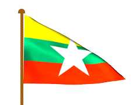

Home
About Martyrdom Leaders
General Aung San
Thakin Mya
U Ba Win
U Ba Cho
Mahn Ba Khaing
U Razak
Sao San Tun
U Ohn Maung
Ko Htwe
About Martyr's Day

(၇၃)နှစ်မြောက် အာဇာနည်နေ့
19 July မမေ့နိုင်
အာဇာနည်မျိုး သေရိုးမရှိ
အာဇာနည်နေ့ တို့မမေ့
1.ဗိုလ်ချုပ်အောင်ဆန်း